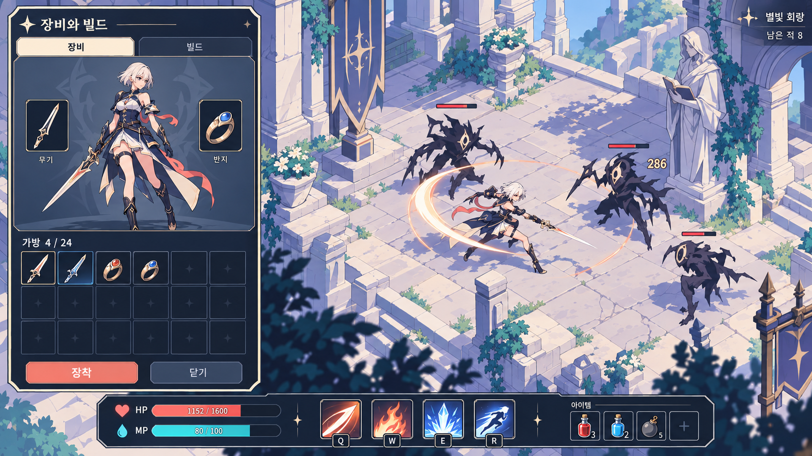

그림체
짙은 남색 선화와 단순한 명암을 사용한다. 균열·금속 흠집·필리그리 등 미세 묘사를 줄이고, 얼굴·장비·스킬의 핵심 실루엣에 대비를 집중한다. 밝은 세계와 남색 UI를 분리한다.
쿼터뷰 액션 파밍 ARPG의 화면은 위험을 읽고, 전리품의 가치를 판단하고, 다음 전투를 준비하는 데 집중한다.
HTML은 디자인 검토용 독립 문서다. 아래에는 ImageGen 아트 시안과 CSS 상호작용 시안을 함께 수록했으며, 모두 실제 게임 캡처가 아니다. 아이템명·수치·지역명은 예시이고, 아트 테마와 조작키 제안은 최종 확정 전이다.
사용자 제공 샘플의 정보 구성을 참고하고, 거친 금속 재질과 과도한 장식을 덜어냈다. 남색 외곽선, 큰 색면, 2~3단계 명암, 아이보리·라벤더 배경으로 전투와 UI의 실루엣을 구분한다. 이 시안의 아트 방향이 아래 초안의 어두운 금속 테마보다 우선한다.

짙은 남색 선화와 단순한 명암을 사용한다. 균열·금속 흠집·필리그리 등 미세 묘사를 줄이고, 얼굴·장비·스킬의 핵심 실루엣에 대비를 집중한다. 밝은 세계와 남색 UI를 분리한다.
체력은 코랄 HP 바. 보조 자원은 청록색 바를 예약하며 MP 또는 스태미나 중 실제 게임 규칙에 맞춰 선택한다. 시안의 MP 80/100은 배치 예시이고 현재 구현 완료를 뜻하지 않는다.
스킬과 구분된 우측 묶음으로 배치한다. 시안은 4칸 예시이며 슬롯 수 N은 데이터로 지정한다. 아이콘·보유 수량·실제 단축키·사용 불가 사유를 표시한다. 빈칸의 +는 아이템 배정 행동을 뜻한다.
| 항목 | 표시 / 동작 | 구현 경계 |
|---|---|---|
| 보조 자원 | 리소스 종류·이름·색·현재/최대값을 데이터로 지정. MP/스태미나 중 사용하는 자원만 표시. 미연결 시 바를 숨겨 공간 회수. | ASC 자원과 비용·회복 규칙 연결 후 노출. HTML과 이미지의 수치는 예시. |
| 퀵슬롯 N | 슬롯별 아이템 아이콘·남은 수량·쿨다운·키 표시. 수량 0은 비활성. 시안은 4칸, N 증가 시 HUD 총폭 상한과 720p 최소 버튼 크기를 검사. | 현행 장비 데이터와 별도 소비 아이템 정의·사용·저장 경로 필요. UI에서 직접 수량을 차감하지 않음. |
| 퀵슬롯 배정 | 가방에서 사용 아이템 선택 → 슬롯 지정. 동일 아이템을 여러 슬롯에 배정하더라도 수량은 실제 보유 원본 하나를 참조. | 슬롯 매핑 저장, 재로드 시 유효성 검사, 없는 아이템은 빈칸으로 복구. 드래그 외 클릭 배정 제공. |
| 사용과 실패 | 사망·일시정지·쿨다운·사용 불가 상태에서는 입력 차단. 성공 결과에만 수량/쿨다운 갱신, 실패 이유는 짧게 안내. | 효과 적용·소모·저장의 일관된 확정 경로를 먼저 설계. 연타로 중복 소비되지 않도록 요청 잠금. |
이미지와 구현 명세의 차이: 생성 가방의 행 수는 24칸 표기와 일치하지 않아 실제 UI는 반드시 6×4=24칸으로 제작한다. 장비창이 열린 전투 포즈는 정지된 배경 예시다. 캐릭터 프리뷰·스킬/아이템 아이콘·보조 자원·소비 아이템은 신규 아트 및 기능 작업이 필요하다.
초기 어두운 금속 테마 시안 원본은 이력으로 보관한다. 현재 아트 제작 기준은 위 최신 시안이다.
프로젝트의 전투 → 드랍 → 장비·빌드 성장 → 더 어려운 전투 루프를 UI의 뼈대로 삼는다. 최신 아트 방향은 선명한 남색 외곽선과 셀 셰이딩, 아이보리·라벤더 색면, 남색 정보판이다. 아래 CSS 시안은 초기 정보 배치 검토용으로 유지하며 최종 아트는 상단 ImageGen 최신안을 따른다. 세계관은 아직 확정 근거가 없으므로 특정 종교 문양·고딕 장식·서사를 필수 요소로 만들지 않는다.
중앙은 플레이어·텔레그래프·적 실루엣에 양보한다. 지속 정보는 가장자리, 즉시 위험은 플레이어 근처에 배치한다.
등급, 슬롯, 핵심 옵션, 현재 장비 대비 차이를 같은 순서로 제시한다. 등급이 높다는 이유만으로 강화 화살표를 붙이지 않는다.
획득·장착·보상은 저장 성공 후 표시를 확정한다. 실패하면 아이템 위치와 선택을 유지해 다시 시도할 수 있게 한다.
| 영역 | 코드에서 확인한 현재 | 이번 기획의 변경 제안 |
|---|---|---|
| 전투 HUD | 스킬 슬롯·실제 잔여 쿨다운 표시. 플레이어 정보의 Health 분기에는 처리 코드가 없음. | 체력·자원 표시 경로 검증 후 통합 HUD. 아이콘 누락과 스킬 잠금을 분리. |
| 장비와 빌드 | Slate 세로 목록에 장착·비교·버리기·빌드·근처 드랍을 함께 표시. | 24칸 시각 가방 + 고정 비교 영역 + 빌드 탭. 데이터/저장 규칙 유지. |
| 보상 | 토큰 기반 선택·지급 경로, 코드 생성 버튼. 현재 직접 연결된 선택 핸들러는 3개. | 최대 3장 스탯 카드와 명시적 선택/확정. 데이터가 3개를 넘으면 검사 오류로 차단하고 추후 동적 바인딩. |
| 드랍·저장 | 획득 성공 후 드랍 제거, 근처 목록 필터, 두 저장 슬롯과 복구 경로. | 월드 라벨 겹침 해소, 실패 메시지, 별도 복구 안내. 필터와 E 획득 대상의 일치 여부 구현 검증. |
1920×1080을 기준 캔버스로 삼고 중앙 60% 폭 × 55% 높이를 상시 패널 금지 영역으로 잡는다. 상단 좌측에는 현재 구간과 목표, 하단에는 체력과 활성 스킬을 둔다. 우측 상단은 단축 안내만 표시하고, 구현 근거가 없는 미니맵으로 채우지 않는다.
일반 전투: 중앙을 비우고 체력과 스킬 가용성을 하단에 묶는다. 스킬 슬롯 수는 현재 로드아웃에 따른다.
| 컴포넌트 | 표현 규칙 / 제안 치수 | 상태와 우선순위 |
|---|---|---|
| 플레이어 생존 | 하단 중앙 좌측 240×68 논리 px. 현재/최대 HP와 게이지 동시 표시. 자원은 실제 소모 시스템이 연결된 경우에만 추가. | HP 25% 이하 경고 진입, 30% 이상 해제 제안. 붉은 색 + ! + 텍스트. 테두리 효과는 끄기 가능. |
| 스킬 바 | 64×64 슬롯, 간격 8. 실제 바인딩 키, 아이콘, 잔여시간. 1초 이상 올림 정수, 미만 소수 1자리 제안. | 준비 / 재사용 대기 / 잠김 / 사용 불가 구별. 자원 부족은 실제 규칙 연결 후 표시. 누락 아이콘은 대체 문양과 스킬명. |
| 적 정보 | 일반 적은 타격·조준 때만 간결한 HP. 정예는 이름·특성, 보스는 별도 상단 게이지를 후속 적용. | 화면 내 후보에 거리·타격 우선순위 부여. 일반 적 이름과 장식이 플레이어/위험 영역을 가리지 않도록 제한. |
| 데미지 숫자 | 일반 / 치명 / 무효를 크기·기호로 분리. 비핵심 숫자 생략 우선. 치명 판정 미연결 시 일반 숫자로 표시. | 현재 전체 128 / 대상 8 풀 상한 유지. 80~120ms 합산은 후속 실험안이며 실제 적용 피해를 변경하지 않는다. |
| 월드 전리품 | 등급명 + 아이템명 + 선택 테두리. 가까운 대상만 E 표시. 화면 투영 후 충돌 라벨을 수직 정렬. | 한 군집 5개, 초과 “외 N개” 제안. 전체 목록은 가방의 근처 탭. 획득 실패 시 라벨 유지. |
모든 치수·임계값은 최초 튜닝값이다. 21:9에서도 하단 핵심 HUD는 중앙 16:9 영역 안에 유지하고, 좌우 확장 공간은 전장 관측에 사용한다.
I로 여는 가방은 기존 싱글 플레이 일시정지 정책을 유지한다. 장비 / 빌드 / 근처 드랍의 3개 탭을 제안한다. 1칸=1아이템의 6×4 배열로 현행 24칸을 표현하고, 다중 크기 퍼즐 가방은 도입하지 않는다. 아래는 장비 탭 시안이다.
무기 · 장착됨 / 장신구 · 비어 있음
가방 2 / 24 · 장착 중 아이템도 용량에 포함낡은 검
공격력 +70균열의 칼날
공격력 +102 (+32)비교값은 아이템 옵션 차이 예시입니다. 최종 DPS·생존력 증가를 보장하지 않습니다.
현재 카탈로그의 두 방향 × 두 단계를 카드 4장으로 표시한다. 각각 스킬 구성, 주력 쿨다운, 해금에 필요한 누적 클리어를 보여준다.
예시 · Rapid 1 → Rapid 2
주력 쿨다운 5.6초 → 4.4초
보고서에 기록된 프리셋 값. 런타임 카탈로그에서 읽으며 문구에 고정하지 않는다.
잠긴 빌드는 조건과 현재 진행도를 표시한다. 변경 전/후 스킬을 비교하고 저장 성공 후 선택 표시를 바꾼다. 교체 시 기존 사용 시각 보존 규칙을 UI도 따라야 한다.
하나를 선택하세요 · 현재 런에 적용
더 빠른 처치에 집중
현재 422 → 적용 후 452*실수에 대한 여유 확보
현재 1,600 → 적용 후 1,720*받는 피해 완화 방향
피해 감소율 환산은 공식 연결 후* 카드와 수치는 표현 예시. 실데이터의 보상 타입·수치·계산식을 사용하며, 최종값을 정확히 계산할 수 없으면 증가량만 표시한다.
첫 클릭은 카드 선택, 별도 “이 보상 받기”로 확정한다. 선택 중 Esc·배경 클릭은 창을 닫지 않는다. 저장·지급 중에는 모든 확정 입력을 잠그고, 성공 콜백 후 다음 구간으로 이동한다. 실패 시 선택을 보존하고 재시도 메시지를 같은 위치에 표시한다. 보상 없음은 “다음 구간으로” 한 행동으로 처리한다.
한국어 산세리프 1종, Regular/Bold 2개 굵기를 기본으로 한다. 1080p 논리 기준 제목 30, 패널 제목 24, 본문 18, 보조 16, 핵심 수치 22px. 숫자는 고정폭 정렬을 우선한다.
8px 간격 단위, 패널 안쪽 24, 섹션 간격 32, 버튼 최소 높이 44. 툴팁은 360~420px 폭과 화면 가장자리 보정. 아이템명 2줄 이후 생략하되 상세에서 전체를 읽을 수 있게 한다.
정보판은 92~98% 불투명. 최신안에서는 금속 질감을 제거하고 선명한 남색 테두리와 평평한 색면을 사용한다. 본문 뒤 노이즈를 피한다. 상태 전환 100~150ms, 획득 토스트 1.5초, 큰 완료 연출 600ms 이하를 초기값으로 제안한다.
준비 완료는 짧은 테두리 강조, 위험은 지속 기호. 보상은 확정 성공 뒤 빛과 소리를 한 번 재생한다. 모션 축소 옵션에서 펄스·흔들림을 제거한다.
필수 에셋 묶음:9-slice 패널 1종, 버튼 5상태(기본·호버·누름·포커스·비활성), 슬롯 4상태(빈칸·점유·선택·장착), 등급 프레임 3종, 범용 대체 아이콘, 실제 사용하는 스킬/아이템 아이콘, 선택·획득·실패·보상 SFX. 렌더타깃 초상화는 작은 화면에서 가치와 비용을 확인한 후 유지 여부를 결정한다.
| 상황 | 사용자에게 보여줄 내용 | 입력 / 복구 규칙 제안 |
|---|---|---|
| 가방 열기·닫기 | “일시정지 · 장비와 빌드”, 선택 아이템과 비교. | I 열기/닫기 유지. Esc는 확인창 → 가방 순으로 한 단계씩. 열 때 게임 입력 차단, 닫을 때 누르고 있던 입력 정리 후 게임으로 복귀. |
| 가방 가득 참 | “가방이 가득 찼습니다. 장비를 정리해 주세요.” | 바닥 드랍 유지. 안내 반복 재생 제한. 가방 진입 제공, 자동 버리기 금지. |
| 저장·획득 실패 | “저장하지 못했습니다. 아이템은 바닥에 남아 있습니다.” | 성공 토스트를 내지 않는다. 획득 대상·가방·장착 표시를 확정 상태로 유지. 재입력으로 재시도. |
| 저장 복구 필요 | 이전 유효 저장 유무, 복원될 진행, 원본 보관 여부를 구분. | 복구 안내 → 결과 확인의 두 단계. 유효 저장 없음이면 빈 프로필 시작을 명시. 취소 가능. 기술 오류 코드는 상세 보기로 분리. |
| 사망 | “쓰러졌습니다” / “현재 구간 다시 시작”. 장비·빌드 유지, 구간 시작 상태 복원을 설명. | 공격·획득 차단. 재시작 단일 실행 잠금. 실패 문구가 전체 초기화를 암시하지 않도록 기존 “처음부터” 문구 개선. |
| 마지막 구간 완료 | 클리어, 새로 해금된 빌드, “새 런 시작”. | 장비·빌드·누적 클리어 유지 / 런 보너스 초기화를 버튼 근처에 안내. 없는 전투 통계는 표시하지 않는다. |
| 보상 중 사망·맵 전환 | 사망·전환 상태가 선택창보다 우선. | 옛 토큰과 콜백 폐기. 새 구간에서 이전 선택 결과를 재사용하지 않음. 단일 최상위 모달만 입력 소유. |
| 포커스 상실·복귀 | 싱글 플레이에서는 일시정지 안내 제안. | 복귀 즉시 공격하지 않음. 입력 초기화 후 명시적 계속하기. 패널 선택/스크롤 복원. |
| 빈 데이터·누락 아이콘 | 빈 가방: “아직 획득한 장비가 없습니다.” 알 수 없는 장비: “정보를 불러올 수 없는 장비”. | 정보 누락과 잠금을 구별. 알 수 없는 ID 보존, 장착 차단. 데이터 오류를 사용자 잘못처럼 표현하지 않음. |
입력 우선순위:저장 복구·파괴적 행동 확인 → 사망/보상/완료 → 가방·설정 → 전투 HUD → 월드. 비상호작용 HUD는 히트 테스트를 통과시키고, 버튼/패널 위 입력은 월드 공격에 전달하지 않는다. Tab 포커스와 Enter/Space 실행은 신규 제안이며, 기존 I/E 외 전투키는 실제 Enhanced Input 매핑을 읽어 표시한다. 패드·전체 재바인딩은 후속 범위로 둔다.
기획 반영은 기존 기능을 재사용하는 작은 단위로 진행한다. CommonUI 플러그인은 활성화되어 있으나 현재 PGUI Build.cs에 직접 의존성이 없으므로, 즉시 전체 CommonUI 전환을 전제로 잡지 않는다. 우선 기존 UMG/Slate와 PGUIManager에서 스타일·입력 규칙을 일관되게 만든다.
| 우선순위 | 작업 / 완료 결과 | 관련 코드 / 선행 조건 |
|---|---|---|
| P0 · 데이터·상태 | HUD HP 경로, 입력 우선순위, 보상 처리 잠금, 저장 실패·사망 문구, 누락 데이터 처리. 스타일 토큰 정의. | PGUIHudPlayerInfo, PGUIManager, PGUIWindowRewardSelect. ASC/StatUpdate 초기 스냅샷과 이벤트 대조. |
| P1 · 플레이 루프 | HUD 스킨, 24칸 가방·비교 영역, 빌드 탭, 최대 3장 보상. 기존 파밍 흐름을 새 UI로 끝까지 플레이. | PGUIInventory, PGUISkillSlot, PGProgressionData, PGProfileSubsystem. P0 통과 후. |
| P1 · 가독성 | 전리품 라벨 충돌 정리, 필터 대상 일치, 알림 중복 제한, UI 배율·핵심 접근성 설정. | PGLootDrop, PGUINotification, PGDamageFloaterManager. 드랍 밀도 시나리오 확보. |
| P2 · 폴리싱 | 아이콘·SFX·경량 모션, 보스 HUD, 패드 탐색, 재바인딩, 초상화 비용 재검토. | 기본 루프 시각·입력·성능 수용 후. 보스/설정 데이터와 저장 경로 필요. |
PGData: 아이템·빌드 원본, 신규 스타일 프리셋 제안 UPGUIStyleData의 색·폰트·크기·연출 시간.
PGActor / GAS: 장착·저장·보상·전투 수치 확정. UI는 결과를 계산 권위로 삼지 않고 읽기 모델을 소비.
PGUI: 표시·포커스·입력 차단·선택 상태. PGMessage / PGShared: 기존 메시지와 공용 타입 유지. UI 상세 타입을 PGData/PGShared에 역참조하지 않음.
새 타입명은 제안이다. 현행 PGActor↔PGUI 등의 순환 예외가 모두 제거됐다고 가정하지 않는다.체력·가방·장착은 이벤트로 갱신하고 최초 표시 때 스냅샷을 읽는다. 쿨다운은 동작 중 슬롯만 주기 갱신. 닫힌 패널은 타이머·구독을 정리한다.
가방 24칸은 고정 풀, 긴 근처 목록은 가상화·거리 후보 캐시를 검토한다. 아이콘은 화면 진입 전 준비하고 매 프레임 동기 로드를 하지 않는다.
기존 보고서: UI p95 1.65ms, 전체 프레임 p95 68.68ms. UI만의 개선으로 60fps 달성을 주장하지 않는다. 같은 부하 조건에서 UI p95 2ms 이하를 초기 회귀 기준으로 제안한다.PGSaveFailure로 획득·장착·보상 실패를 재현. 거짓 성공 표시, 드랍 소실, 선택 유실이 없음. 가방 포화·빈 데이터·최신 저장 손상도 확인.PGStress 100 100 등 기존 시나리오를 동일 조건으로 측정. 라벨·플로터 상한, 창 100회 열기/닫기, 맵 전환 후 중복 구독·타이머 잔존 확인.위 항목은 향후 게임 구현의 수용 기준이며 이 HTML 작성으로 통과한 항목이 아니다. 이번 산출물은 기획과 브라우저용 개념 시안까지다.
2026-09-19 로컬 문서와 C++를 기준으로 작성했다. 프로젝트 지침의 POE/Diablo 계열 방향성을 따르되, 특정 상용 게임의 현재 UI를 조사하거나 재현한 문서는 아니다. 아래 보고서의 과거 설명보다 최신 코드와 후속 반영 기록을 우선한다.